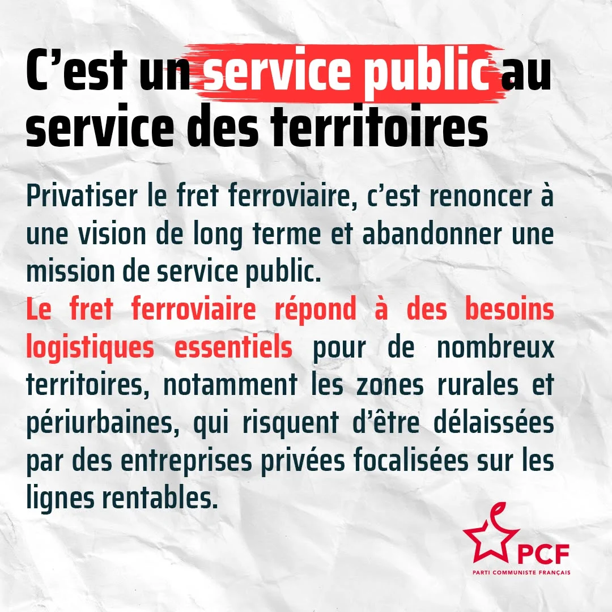
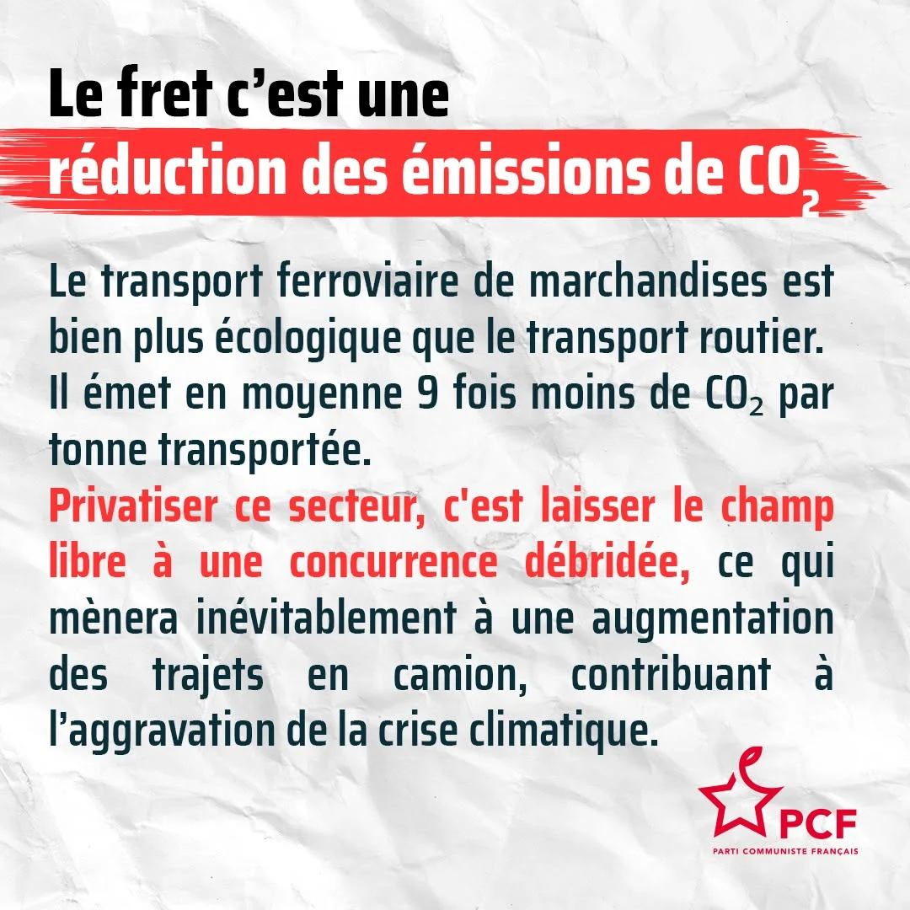
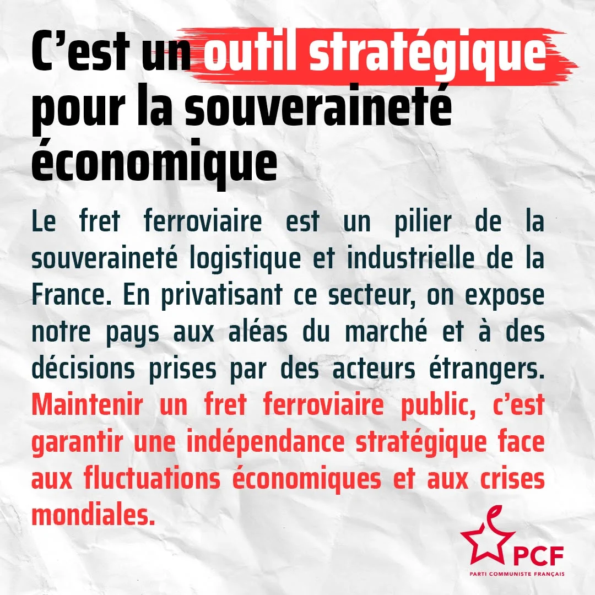
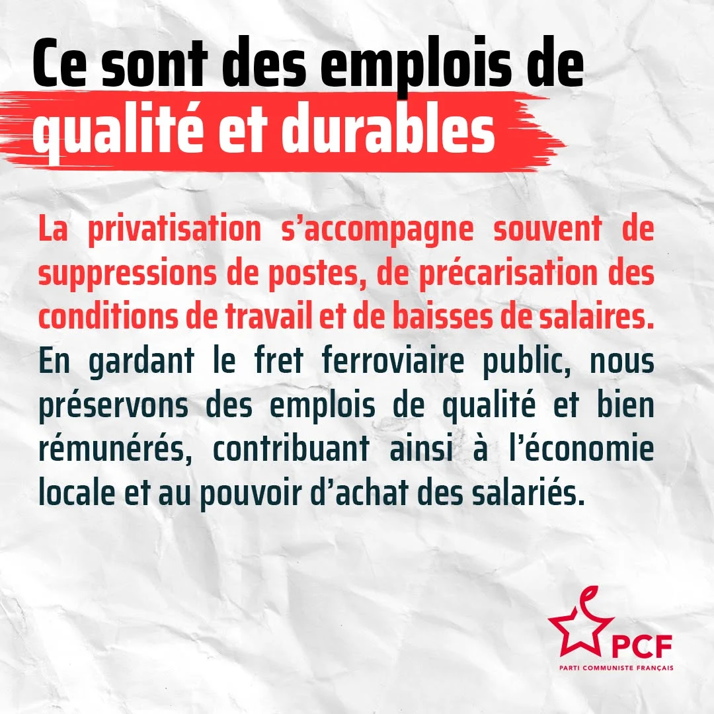
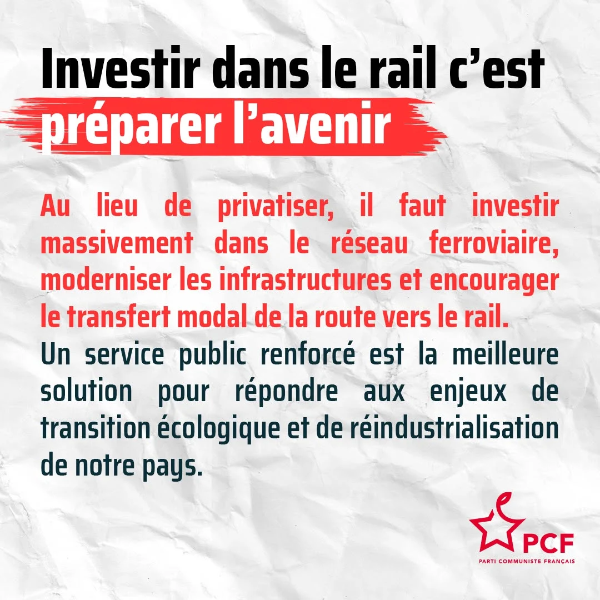
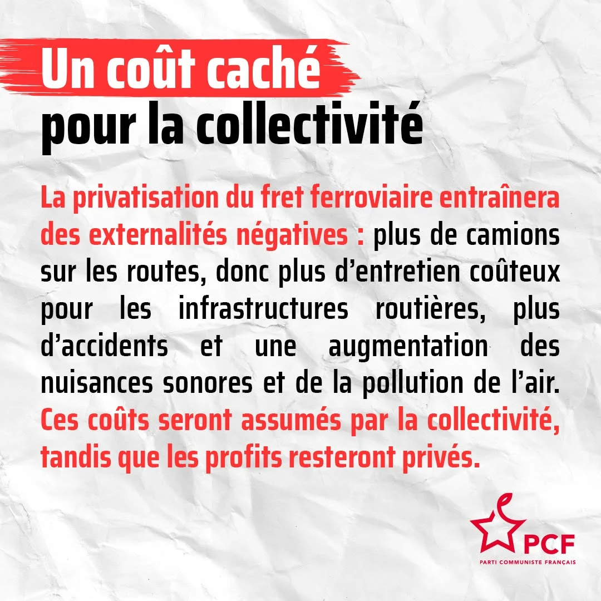
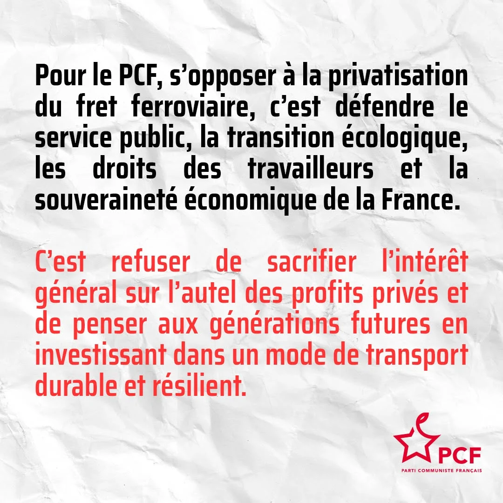

Publication relayée par le PCF 79
Le PCF dénonce la privatisation du fret ferroviaire
Date de mise à jour indiquée par Facebook · 19 novembre 2024
Texte de la publication · PCF national
Privatiser le fret ferroviaire, c'est abandonner une mission de service public, c'est aggraver la crise climatique







Sources
PCF national · publication relayée par le PCF 79 · bibliothèque Facebook · AR-0002-FB-01242
À lire aussi · Nous soutenons les cheminots en grève pour le service public ferroviaire